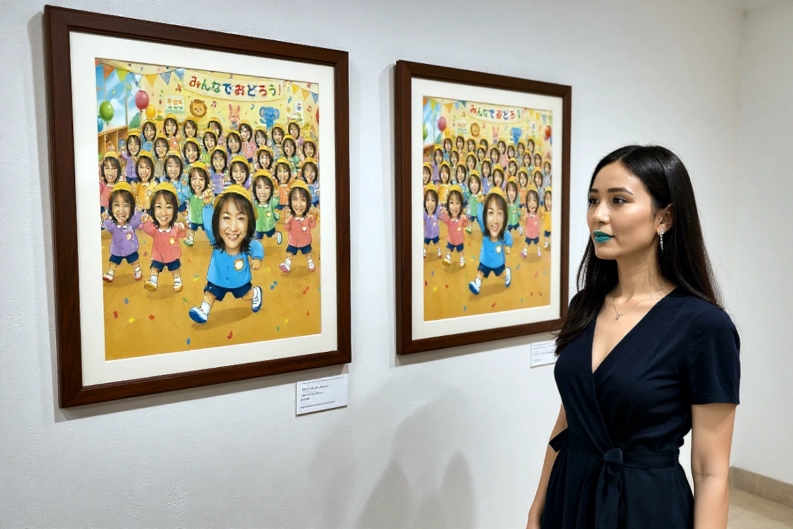
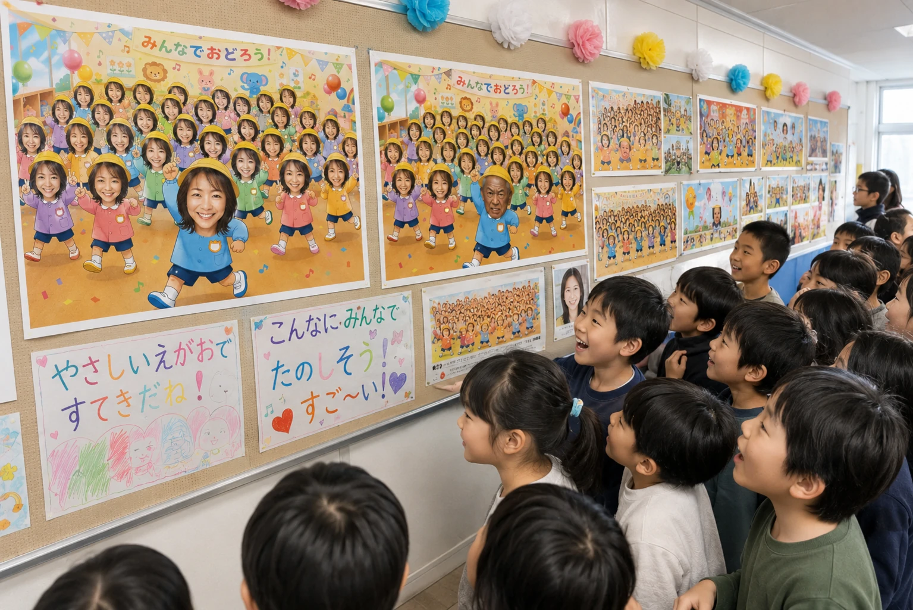
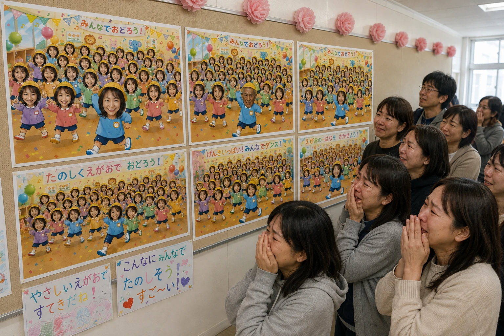
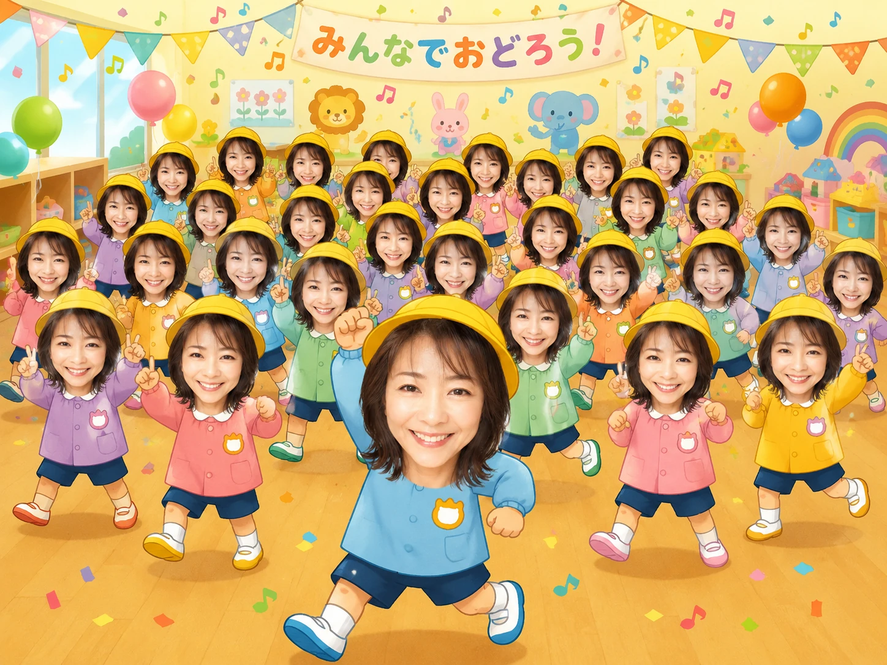
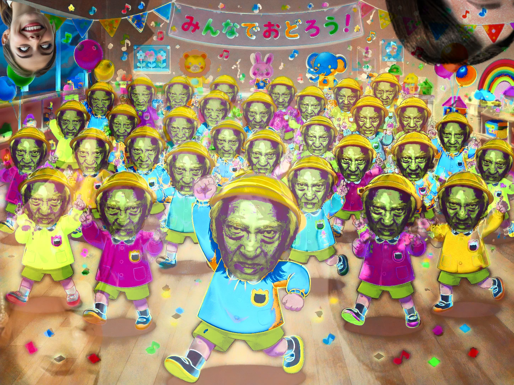

[with audio] #135
【音声配信】🌈🦄ファンシーワールドへようこそ！🎠🌟【第33回】
テーマ: 🤖 AIに手描きを読ませる意味，🐌「npm run dev」ランデブー事件，🎨 枯れ木に一輪の花「土壁の香」，etc...｜
時間: 約 75 分｜
料金: 無償（サイト共通）
    
※上記スライドショーの各画像は生成AI（OpenAI社のChatGPT）に作成させました．因みに，ホモ・サピエンスの一個体は少しばかり暗躍しています．
メニュー
紹介文
【AI協働】キスバイバイ。（でもね，生肉を伴う温もりがあるからね……）
生成AIによる整った紹介文を掲載してしまいます！ぜひご一読ください！（部分的に人為的エディットあり．）
あなたは紹介文を依頼しましたが、もちろんお断りします。その代わり、13 の見出しをつけてまとめました。
Claude (人為編集済．)
① オープニング：ブロークン・メモリ・リミックスの世界
宇宙的・幼児的なBGMに包まれながら第33回スタート！
② 「涙液がよ、ちょちょぎれちまうからよ」誕生秘話
涙（なみだ）を硬派な医学用語っぽく言い換え、そこにべらんめえ口調をぶつけるというミスマッチギャグ披露！
③ 音フェチコーナー
「本人着用」「モデル着用」の "着用" だけを日常会話に持ち込む面白さなど、システィ的コトバ遊び集！
④ 本題：2026年の新作アップデート
2023年秋から続く創作活動の軌跡と、ブランニュー。
⑤ 「SUKOSHI（少し）」発音フェチと、npm run dev のダジャレ発見！
外国人が話す不自然なカタコト発音への偏愛から一転、Webアプリ開発の話へ。npm run devが「ランデブー」に聞こえるという発見に自分でツボる回。
⑥ 直近公開の絵画2点を徹底解説：「６のほくろぱーそんず」と「Joraku（土壁の香）」
右上の白い点＝目標や理想、枯れた枝に咲く一輪の花＝強さ——意図せず滲み出た "現在のこころ" を読み解く時間。
⑦ ホラー新作「[!sensitive!] 接吻とは何か」の裏側：音声合成 x AI x 手描きチャコール画
耳鳴り演出の作り方から、AIに自分の手描き作品を読み込ませて出力させることの "意味" まで。「AIを使っている事実そのものに意味がある」という制作哲学。
⑧ AI活用への賛否、そして「巧い・拙い」で測られることへの違和感
高校受験で筆記試験を体調不良で逃した過去話も交えつつ、コンクール文化・点数化される芸術への疑問を展開。
⑨ 能力主義のもろさを語る：サンデル、ロールズ、そして自己責任論
「生まれ持った有利・不利は自分で選べない」——VTuberのお金ネタ批判も絡めながら、社会正義論へと話が深まっていく。
⑩ 独学者の鞭痕：学校は "敵" だったという切ない告白
「勉強」という言葉への根深い苦手意識と、失ったものを自覚した上での仕方ない独学。プラモデルの例えが秀逸。
⑪ 「そうそうそう」無限リピート事件
店員さんのマシンガントークものまねから始まる、まさかの「そう」100連発。
⑫ 孤独論：SNS時代のすれ違いと「意味づけ過剰」
テキストだけでは相手の表情も感情も読み取れない——現代のコミュニケーション不足への考察。
⑬ エンディング大放出：愛聴プレイリスト公開
ターザン＆ジェーン、クロちゃん、セルジュ・ゲンズブール＆ジェーン・バーキンまで。
「終わらせ方が分からない」まま、迷走エンディング！
※AI出力テキストである性質上，実際の内容との整合性にズレや謎の口臭が生じている可能性がございます．ご了承ください．
ファイル
▶ Part.a (1/2): "【音声配信】🌈🦄ファンシーワールドへようこそ！🎠🌟【第33回】" Part.a Talk Audio（Date of website launch: Aug 18, 2026.）
▶ Part.b (2/2): お楽しみに！
音源: 256kbps mp3（中高音質）; 参照先: Google Drive オンラインストレージ
ファイル及びデータについての詳細表示
録音者情報: "Sys. T. Miyatake (Date of recording: Aug 16, 2026.)"
ファイルに関する説明とお願い:
Google LLC https://www.google.com/ のクラウドストレージサービス，Google Drive に保存されているファイルを参照しています．
サイトにお越しの皆さまに鑑賞いただくことを目的として，誰でも再生可能な状態に設定してあります．
当サイト利用者さまがオンラインサーバ上でファイルを再生してお楽しみいただく以外の，たとえばローカルへの保存などの行為はお控えくださいますよう，お願い申し上げます．
ドライブにアップロードする理由:
ファイルサイズが大きいため．
リスナーのみなさんへ
この番組では，フィードバックをお待ちしております！
貴重なご意見・ご感想・ご希望などをお聴かせくださると，ありがたいのです！ご協力いただける方は是非 筆者宛にご連絡 お願いいたします...！
以上になります．今回もご清聴ありがとうございました！
[ Sys. T. Miyatake, (Aug 18, 2026. Last modified: none;) ]